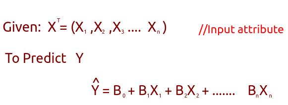
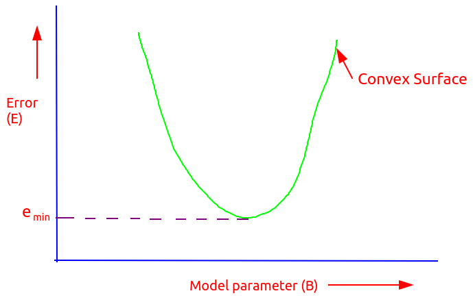
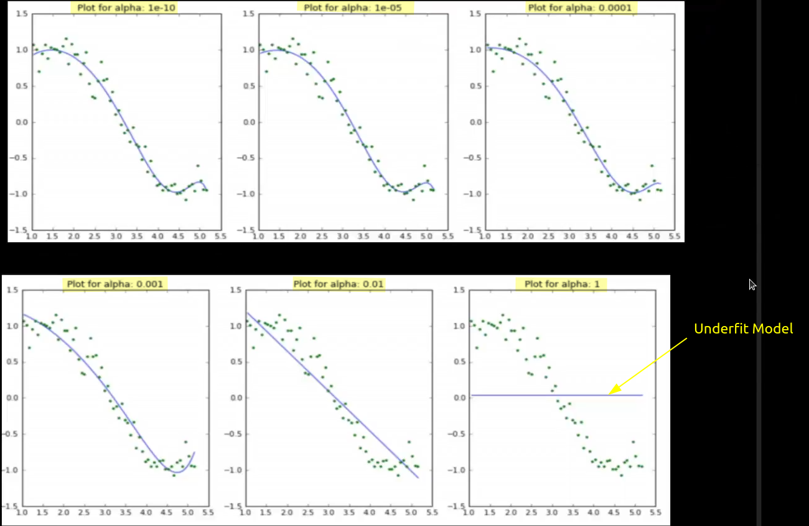
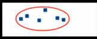

ML
Mr Jhalak Hota


Note : Internally regression and classification are same


~~~~~~~~~~~~~~~~~~~~~~~~~~~~~~~~~
Model : These are rules that segregates the instance(Solution) space

Que: How the models are expressed ?
Sol: 1) Logical Rules - Logical modeling
Ex: Model specifying surviving criterion for Titanic ship logic

2) Geometric - Geometric Modeling
Ex -

3) Probability - Probabilistic Modeling
Ex: Mostly used for classification problems
Baye's Theorem

Note: Let's say we have a scenerio where we just want to analyze the data and find the distances between the observations. So for this we need to use distance metrics.
Using different distance metrices like euclidian, manhatten etc(each used in different scenerios) we found the various distances and come to know that two X which are highlighted with red are closer than the others.
~~~~~~~~~~~~~~~~~~~~~~~~~~~~~~~~~
Methods of learning
1) Least Square Method (Linear Model)
2) K- Nearest Method (Classification)
3) Distance Based Model(Unsupervised Learning)
Que: What is learning?
Ans: Changing the coefficients of the model to achieve a better accuracy in the ML task.
Let's see a scenerio of Linear model,

So as metioned we assumed f'(X) indicating that we try to relate/Map X -> Y using a straight line.
But now there could be many lines like
Each line is identified by its intercpt and slope(as eq of line Y= MX + C ). So during learning we try to adjust the values of M(slope) and C(intercept) so that when we input X it gives correct Y and if it(model) gives for majority of our data then we got the correct model else again we adjust the values of M and C and try again.
In successive classes we will get to know that the changes in intercept(a.k.a bias) is prohibited and mostly changes are done in slope.
Least Square Method (Linear Model)


The Bias (B0) :
Note : During machine learning small change is OK and we mostly change the slope(coefficient B1). If we find the significant change in B0 then the model is prone to overfitting.
Let say the model is represented as
Y= B0 + B1X1 + B2X2
Then during learning values of B1 and B2 are adjusted and we try not to adjust B0.
Que: What is learning Rate/ Rate of learning?
Ans: Amount of change being performed on each iteration.
Let's say at (i+1)th iteration
Que What is the optimal rate of learning? What parameters affect that?
Ans : Will be given after understanding least square method.
Least Square method
Least square method aims to minimize the total Sum of square error(E)
Note: Only suitable for linear Models
Que : Why we taking square on the above equation?
Ans : We square in the above equation so that we get a convex surface(parabola) which
-> Ensures minimizing the error
-> Guides to get the optimized rate of learning.
Let's plot the error vs B(model parameter)
'
Now when we developed a model we can lie/spawn at any point on the curve and then need to do the changes in the coefficients to reduce the error. Here comes the major importance of rate of learning. Let say in both the cases we landed at point R1 and now we take different rate of learning in both the cases.
High learning Rate : We may miss the optimal parameter
Low Learning Rate : The convergence is very slow
So, we need to find the optimal rate of learning.
Limitation of Least Square method
-> Works perfectly only with linear models
-> Linear models has it's shortcomings, so as least square
~~~~~~~~~~~~~~~~~~~~~~~~~~~~~~~~~
Distance Based Model (Unsupervised Learning)
→ Mostly used in unsupervised learning.

Let's say we need to do a unsupervised learning(Y is not known). So we try finding the distances between various points to conclude something.
dis(P1P2) < dis(P1P3) < dis(P1P4)
So P2 is closer to P1 than P3.
This is called Distance based model.
~~~~~~~~~~~~~~~~~~~~~~~~~~~~~~~~~
Limitation of liner Model
-> Linear Model don't fit properly for classification
Ex: Let's say in the below graph we want a model to classify blue and Yellow.
In this case we found that Linear model is not appropriate to use/implement.
Now for the case above we need more zig-zag kind of line(model). For the same nearest neighbour model was developed.
Nearest Neighbour Method (Classification)
Let's say we are given following scenerio

Now to know which class the X belongs we need some way to decide that.
Here we'll use/see the neighbours of X to determine which class it should belong to. In order to do that we'll find distance between X and it's neighbours.
Que : We'll calculate the distance but with how many neighbours ?

As you can see that with increased number of neighbours computation will be more.
In mathematical terms we write,

Que : So the question remains the same how many neighbours to consider?
Ans : This kinds of problem is NP- complete problems i.e. non deterministically polynomial hence we can't reach to any particular decision. So we have to go for trial and error(Brute force).
Let's see how our model is affected if we take different number of neighbours.

(Fig1) 15 Neighbours (Fig 2) 1 Neighbour
Que : But which one should we choose?
Ans : Fig 1 must be used. Fig2 is rejected because it doesn't generalise(ability of model to capture the unknown) ,highly overfitted, high variance and low bias.
Advantage of nearest neighbour model
→ Only nearest neighbours are involved in defining the model instead of all other data(as we see in LM).
~~~~~~~~~~~~~~~~~~~~~~~~~~~~~~~~~
Overfitting
It's the condition where our model gives
-> Best result for seen data/ Train data
-> Worst Result for unseen data/ Test data
For ex: Let's say your model is a student and he's preparing for exams. He mugged up the solutions and gave exam. Now exam can be of two categories.
Case 1: Same question with same value came : So in this case our model passed with flying colour as all the questions have the same data and our model just needs to reproduce it and pass exam with high accuracy.
Case 2: Same question with different data came and this time again our model just wrote the solution that he mugged up now this is where he wen't wrong and failed miserably.
Case Study : To understand overfitting let's see a case study.
Let's say we have a set of observations as shown below.
So we applied linear model to it,
But we found that in region A most of the observations are too away from our model.So we thought when not bring some curve to our model such that it covers more points.
In this model we found that yes it covers more of the observation (i.e. better model with better results). Now we tempted to add more curves and came up with model shown below.
Ok we got a really high accuracy model with better results but what about the complexity and computation power. We can see that the model is in terms of power of 6 so it will increase the computation and time and will be discarded for same. This is the proper example of overfitted model.(i.e. it has great accuracy but not optimal in terms of computation and some other parameters).
So the first one is underfitted second is perfect fit and the last one is overfitted model.
So one more example
In overfitting model is : Low Bias and High Variance
Que: So where to stop or which model to consider?
Ans:
We should stop where the total tran error is minimum and test error and train error are small.
Note : Regularization technique prevents the model from overfitting.
Regularization technique (It regulates terms with higher power)
Cause of Overfitting
-> Multicolinearity
Let's understand,
Attribute: Columns/Properties
Features: Those columns that contributes towards model building. Features are subset of attribute.
Let say we given a table and it contains 10 attributes.
X= (X1, X2, X3,.... X10)
Now for model building let's say we choose 4 attributes namely X1,X3,X7,X10 and so we introduced certain bias here.
In order to neutralise the bias we inroduce some variance. Say we also used X6 and X8 as feature.
Now if we see that X1 is linearly related to X6(i.e. info we getting from X1 is very similar to X6 so there is no use of including X6 as it just increasing the complexity) then we have introduced features that are corelated to each other and this leads to overfitting.
Case study
Let's see a secenrio where we have 15 attributes
Now on selecting different number of features we get different curves
Now we can see the table with values of coefficient of model in different scenerios
Point to remember is that the coefficient value decides the importance of that feature(it's worth to include/considered or not).
So to manage overfitting we have to penalise the coefficients. It cold be done as:
Method 1: RIDGE REGRESSION / Ridge regularization
-> It performs L2 Regularization
-> The penalty added here is Sum of Squares of coefficients.
-> Objective : Residue Sum Square + α(Sum of squares of coefficients)
Where α = Hyperparameter given by the model developer. This is what the developer can change.
Case 1: α=0
Model becomes simple linear regression
Case 2: α=∞
All coefficient become 0.
If coefficient != 0,
then (coeff)^2 = ∞, and the model will not be practically realisable.
Case 3: 0<α<∞
Let's see for different values of α how the model is changing.
We found that last graph with hight value of α is highly bias(curve is not affected by the observations).
So we can conclude that
-> Bias is proportional to α
-> With higher α complexity decreases
Method 2: LASSO REGRESSION
-> Objective: Residue Sum Square + α(Sum of absolute value of coefficients)
->LASSO can make some coefficient to zero hence used while feature selection.
-> Very sensitive as it removes features in case they don't contribute in model building by making them zero.
Case Study
Let's say we used Lasso Regression and the table we found for different α values be

~~~~~~~~~~~~~~~~~~~~~~~~~~~~~~~~~
Classification
Let's assume a supervised learning, but here the target variable(Y) is discrete/categorical.
Let's see a binary classifier(only 2 classes)
Now if the observation lies below the boundary then it belongs to class II else it belongs to class I.
So the main objective here is to set the boundary.
Note: This boundary can be a curvy line.
Training a classifier means, finding the best possible threshold.
So to do that we have three ways
1) Logistic Regression
2) Maximum Likelihood Estimator
3) Naive Bayes
~~~~~~~~~~~~~~~~~~~~~~~~~~~~~~~~~
Generalised Linear Model
Note: When the error distribution around the points follows normal distribution then we can use linear model.
So we need to make a generalised linear model
In poisson distribution we are given the mean(Lambda) and asked to calculate the probability.
~~~~~~~~~~~~~~~~~~~~~~~~~~~~~~~~~
Maximum Likelihood
It answers, which are the best parameters/coefficient for any model.
Maximum likelihood Estimator gets the parameters(mean and variance) from the distribution.
~~~~~~~~~~~~~~~~~~~~~~~~~~~~~~~~~
Properties of cluster
-> All the data points in a cluster should be similar(distance between them should be least) to each other.

-> The data points from different clusters should be as different(distance between 2 points in 2 clusters should be max) as possible.
Note: Case 2 is more appropriate.
Understanding the different evaluation metrices for clustering
-> Distance within a cluster- Intra cluster Distance
-> Distance among clusters- Inter cluster Distance
1) Inertia
It calculates the sum of distances of all the points within a cluster from the centroid of that cluster.
If the Inertia is less then cluster is tight/compact.
If the Inertia is more then cluster is loose.
Higher Dunn index is better
K-Mean Clustering
Here our aim is to minimize the distance between the points within a cluster(Intracluster distance).
Steps to find the K Mean cluster
Step 1: Choose the number of cluster k
Let's say k=2
Step 2: Select k random points from the data as centroid.
Step 3: Assign all the points to the closest cluster centroid
Step 4: Recompute the centroids of newly formed clusters
Step 5 : Reassign the points to the new closest cluster centroid.